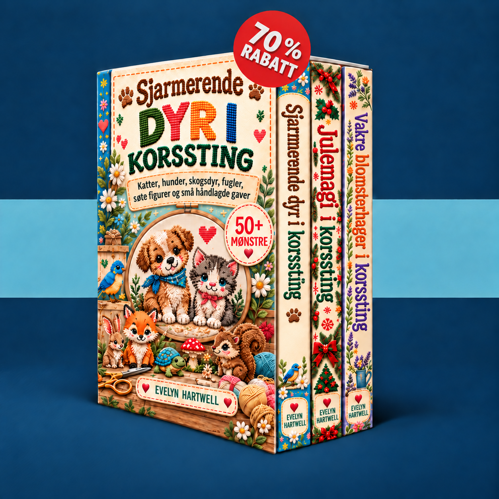

Velg et lite motiv, lær å lese tellemønsteret, og broder ditt første prosjekt trinn for trinn.
Mønstrene dine lastes inn…
Aktiver JavaScript for å bruke medlemsområdet, eller åpne bøkene direkte via lenkene nedenfor.
Send en e-post